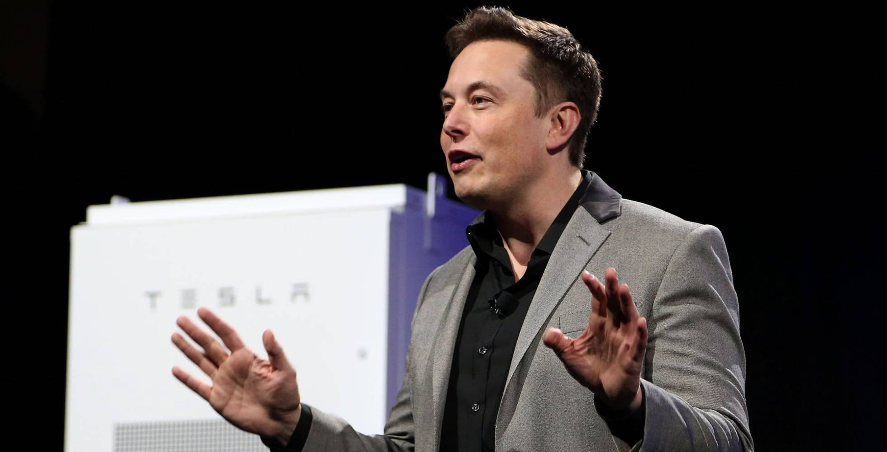

Últimas noticias
Amazon ya ha hecho pruebas para entregar sus paquetes con drones

12/05/2017 | 10:09
Tesla presentará en septiembre el prototipo de camión eléctrico

03/05/2017 | 12:56
El mejor jugador de Go pierde frente a la inteligencia artificial de Google
29/04/2017 | 17:02